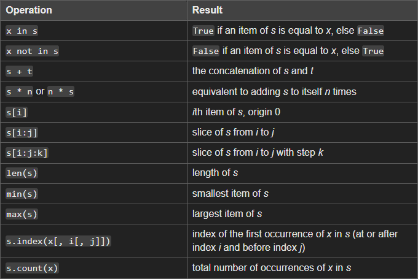

Sequence Data Type is a collection of ordered items that can be accessed by their index
List
Tuple
Range
Common Sequence Operations
The
in
and
not in
operations and The
+ (concatenation)
and
* (repetition)
operations have the same priorities as operators.
